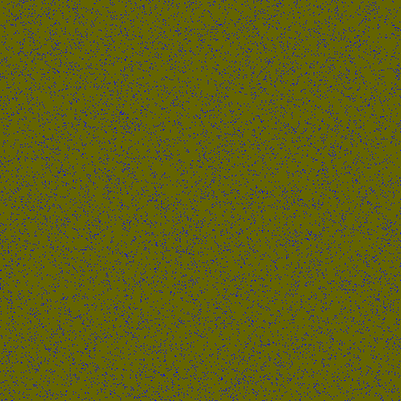
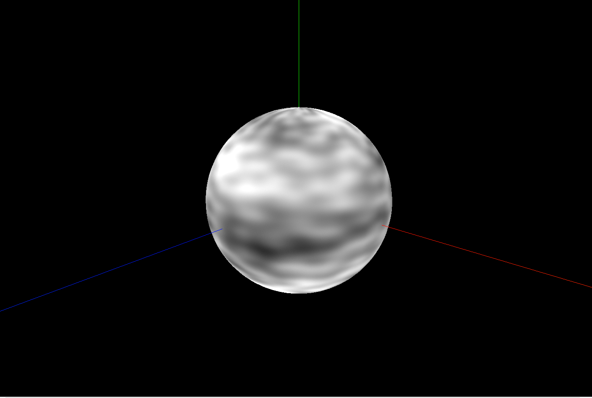
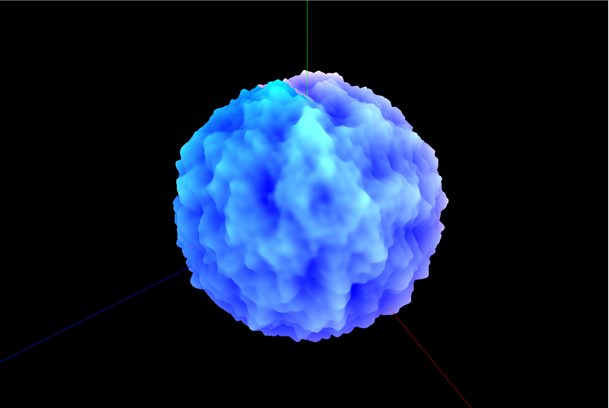

A default test planet with the Earth's color, specular, and normal map
Accomplished
Unfortuantely, we are not quite at the benchmark that we set for ourself at the beginning of our project. So far, we have only managed to start development in three.js and do the most basic of creating a sphere, and projecting a map texture on it. For rendering the image, we require 3 texture maps, a color map, a normal map, and a specular shading map. We hope to keep working forward to implement procedurally generating a color map with perlin noise. With perlin noise as a random factor, we plan to use it to generate our color maps by calculating elevations and moisture levels and coloring the texture map by sorting and coloring by biome. Surface elevation and normals will also be generated through perlin noise, although we will use some mathematical manipulations on it such as changing the frequencies and octaves for a more realistic look.
Preliminary Results
|

|

|
|

|

|
[images, videos, slides go here]
Reflection
Doing this final project has really opened our eyes and made us realize that development was not as easy or smooth as we hoped. Since the beginning we had to discuss to choose a platform and code database for our project to run on, and we experimented with many approaches like building off the CS184 class projects or writing our own from scratch. We also spent some time deciding what language we would do development in. Finally, we agreed on three.js for a flexible Javascript API with a decent 3D library to do this project in. three.js is a very powerful library and we got a lot of inspiration from the examples of other projects done in it. Even then, we were initially caught off guard on how to begin, and we've spent quite a few days deciding how to start, from how to render the planet to how to use perlin noise to procedurally generate texture maps. This project was extremeley eye-opening in how code development is not straight-forward and our goals and ideas would often have to be tweaked as we grew more familiar with the constraints and capabilities of our tools.
Updated Work Plan
In our initial schedule plan, we were supposed to set up the environment and get bumps and craters working by the two week deadline. Because we spent more time than we had planned choosing a platform to get started on, we are unfortunately a bit behind schedule. As it stands now, we may have to cut back on some flashier features such as dynamic rendering at different zoom levels or atmosphere and clouds affecting lighting. After spending some time working with three.js and seeing how powerful its shaders are, we want to dedicate most of our time and energy now to making sure we properly generate perlin noise and manipulate it into creating good looking color and elevation textures for our planet.